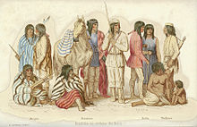
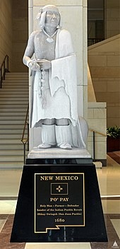
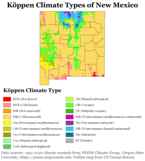

click to go back home
New Mexico
This article is about the U.S. state. For other uses, see New Mexico (disambiguation)
New Mexico (Spanish: Nuevo México[Note 2][6] [ˈnweβo ˈmexiko] (listen); Navajo: Yootó Hahoodzo Navajo pronunciation: [jòːtʰó hɑ̀hòːtsò]) is a state in the Southwestern United States. It is one of the Mountain States of the southern Rocky Mountains, sharing the Four Corners region of the western U.S. with Utah, Colorado, and Arizona, and bordering Texas to the east and southeast, Oklahoma to the northeast, and the Mexican states of Chihuahua and Sonora to the south. New Mexico's largest city is Albuquerque, and its state capital is Santa Fe, the oldest state capital in the U.S., founded in 1610 as the government seat of Nuevo México in New Spain.

New Mexico is the fifth largest of the fifty states, but with just over 2.1 million residents, ranks 36th in population and 46th in population density.[7] Its climate and geography are highly varied, ranging from forested mountains to sparse deserts; the northern and eastern regions exhibit a colder alpine climate, while the west and south are warmer and more arid. The Rio Grande and its fertile valley runs from north-to-south, creating a riparian climate through the center of the state that supports a bosque habitat and distinct Albuquerque Basin climate. One–third of New Mexico's land is federally owned, and the state hosts many protected wilderness areas and national monuments, including three UNESCO World Heritage Sites, the most of any state.[8]
New Mexico's economy is highly diversified, including cattle ranching, agriculture, lumber, scientific and technological research, tourism, and the arts, especially textiles and visual arts. Major sectors include mining, oil and gas, aerospace, media, and film.[9][10][11][12] Its total gross domestic product (GDP) in 2020 was $95.73 billion, with a GDP per capita of roughly $46,300.[13][14] State tax policy is characterized by low to moderate taxation of resident personal income by national standards, with tax credits, exemptions, and special considerations for military personnel and favorable industries. Due to its large area and economic climate,[15] New Mexico has a significant U.S. military presence, including White Sands Missile Range, and strategically valuable federal research centers, such as Sandia and Los Alamos National Laboratories. The state hosted several key facilities of the Manhattan Project, which developed the world's first atomic bomb, and was the site of the first nuclear test, Trinity.
In prehistoric times, New Mexico was home to Ancestral Puebloans, the Mogollon culture, and the ancestors of the Ute people.[16] Navajos and Apaches entered the state towards the end of the 15th century and the Comanches in the early 18th century. The Pueblo peoples occupied several dozen villages, primarly in the Rio Grande valley of northern New Mexico.[17][18] Spanish explorers and settlers arrived in the 16th century from present-day Mexico, naming the territory Nuevo México after the Aztec legends about the Pueblos of Yancuic Mexihco, a new Mexico, which evolved into the stories of the Seven Cities of Gold.[19][20][21] Isolated by its rugged terrain and the relative dominance of its indigenous people, New Mexico was a peripheral part of the viceroyalty of New Spain. Following Mexican independence in 1821, it became an autonomous region of Mexico, albeit increasingly threatened by the centralizing policies of the Mexican government, culminating in the Revolt of 1837; at the same time, the region became more economically dependent on the United States. At the conclusion of the Mexican–American War in 1848, the U.S. annexed New Mexico as part of the larger New Mexico Territory. It played a central role in U.S. westward expansion and was admitted to the Union as the 47th state on January 6, 1912.
New Mexico's history has contributed to its unique demographic and cultural character. It is one of only six majority-minority states, with the nation's highest percentage of Hispanic and Latino Americans and the second-highest percentage of Native Americans after Alaska.[22] New Mexico is home to one–third of the Navajo Nation, 19 federally recognized Pueblo communities, and three federally recognized Apache tribes. Its large Hispanic population includes Hispanos, who descend from Oasisamerican groups and settlers of Nuevo México in New Spain,[23][24] as well as later groups of Mexican Americans since the 19th century. The New Mexican flag, which is among the most recognizable in the U.S.,[25] reflects the state's eclectic origins, featuring the ancient sun symbol of the Zia, a Puebloan tribe, with the scarlet and gold coloration of the Spanish flag.[26] The confluence of indigenous, Hispanic (Spanish and Mexican), and American influences is also evident in New Mexico's unique cuisine, music genre, and architectural styles.
Etymology
New Mexico received its name long before the present-day nation of Mexico won independence from Spain and adopted that name in 1821. The name "Mexico" derives from Nahuatl and originally referred to the heartland of the Mexica, the rulers of the Aztec Empire, in the Valley of Mexico. The Classical Nahuatl term Yancuic Mexihco, a New Mexico, was used to describe a mystical empire that rivaled the scale of their own Aztec Empire. These myths had a basis in the trade network of the Pueblos. These stories eventually evolved into the folklore of the Seven Cities of Gold.
Following their conquest of the Aztecs in the early 16th century, the Spanish began exploring what is now the Southwestern United States calling it Nuevo México, a Spanish language translation of the prior Nahuatl term Yancuic Mexihco. In 1581, the Chamuscado and Rodríguez Expedition named the region north of the Rio Grande San Felipe del Nuevo México.[27] The Spaniards had hoped to find wealthy indigenous cultures similar to the Mexica. The indigenous cultures of New Mexico, however, proved to be unrelated to the Mexica and lacking in riches, but the name persisted.[28][29]
Before statehood in 1912, the name "New Mexico" loosely applied to various configurations of territories in the same general area, which evolved throughout the Spanish, Mexican, and U.S. periods, but typically encompassed most of present-day New Mexico along with sections of neighboring states.[30]
Main article: History of New Mexico
For a chronological guide, see Timeline of New Mexico history.
See also: Territorial evolution of New Mexico

Prehistory
The first known inhabitants of New Mexico were members of the Clovis culture of Paleo-Indians.[31]: 19 Footprints discovered in 2017 suggest that humans may have been present in the region as long ago as 21,000–23,000 BC.[32] Later inhabitants include the Mogollon and Ancestral Pueblo cultures, which are characterized by sophisticated pottery work and urban development;[33]: 52 pueblos or their remnants, like those at Acoma, Taos, and Chaco Culture National Historical Park, indicate the scale of Ancestral Puebloan dwellings within the area. These cultures form part of the broader Oasisamerica region of pre-Columbian North America.
The extensive scale of Ancestral Puebloan trade networks led to legends throughout Mesoamerica and the Aztec Empire (Mexico) of an unseen northern empire that rivaled their own, which they called Yancuic Mexico, literally translated as "a new Mexico".
Nuevo México
New Spain era
Main articles: Seven Golden Cities of Cibola and Santa Fe de Nuevo México
Statue of Popé, leader of the Pueblo Revolt. The statue, entitled Po'pay, is among two statues depicting New Mexicans at the United States Capitol National Statuary Hall Collection, the other being Dennis Chávez.
The Aztec legends of a prosperous empire to their north became the primary basis for the mythical Seven Cities of Gold, which spurred exploration by Spanish conquistadors following their conquest of the Aztecs; prominent explorers included Álvar Núñez Cabeza de Vaca, Andrés Dorantes de Carranza, Alonso del Castillo Maldonado, Estevanico, and Marcos de Niza.
Francisco Vásquez de Coronado assembled an enormous expedition at Compostela in 1540–1542 in search of these fabled golden cities.[33]: 19–24 Francisco de Ibarra was one of the first Spaniards to use the term New Mexico, after reported his findings in 1563 as confirmation of "a New Mexico".[34] Juan de Oñate officially established the name when he was appointed the first governor of the new Province of New Mexico in 1598.[33]: 36–37 The same year, he founded the San Juan de los Caballeros capital at San Gabriel de Yungue-Ouinge, the first permanent European settlement in New Mexico,[35] on the Rio Grande near Ohkay Owingeh Pueblo.[33]: 37 Oñate extended El Camino Real de Tierra Adentro, Royal Road of the Interior, by 700 miles (1,100 km) from Santa Bárbara, Chihuahua, to his remote colony.[36]: 49 But following the heavy-handed treatment of the natives, Oñate was exiled from New Mexico.[37]
The settlement of La Villa Real de la Santa Fe de San Francisco de Asís was established by Pedro de Peralta as a more permanent capital at the foot of the Sangre de Cristo Mountains in 1610.[36]: 182 Towards the end of the 17th century, the Pueblo Revolt drove out the Spanish[38] and occupied these early cities for over a decade. After the death of Pueblo leader Popé, Diego de Vargas restored the area to Spanish rule,[33]: 68–75 with Puebloans offered better cultural and religious liberties.[39][40][31]: 6, 48 Returning settlers founded La Villa de Alburquerque in 1706 at Old Town Albuquerque as a trading center for existing surrounding communities such as Barelas, Isleta, Los Ranchos, and Sandia;[33]: 84 it was named for the viceroy of New Spain, Francisco Fernández de la Cueva, 10th Duke of Alburquerque.[41] Governor Francisco Cuervo y Valdés established the villa in Tiguex to provide free trade access and facilitate cultural exchange in the region.
Beyond forging better relations with the Pueblos, some governors like Tomás Vélez Cachupín became well known for their forward-thinking approach to indigenous rights;[42] the comparatively large reservations in New Mexico and Arizona are partly a legacy of Spanish treaties recognizing indigenous land claims in Nuevo México.[43] Nevertheless, relations between the various indigenous groups and Spanish settlers remained nebulous and complex, varying from trade and commerce to cultural assimilation and intermarriage or total warfare. During most of the 18th century raids by Navajo, Apache, and especially Comanche Indians inhibited the growth and prosperity of the New Mexican population. The region's harsh environment and remoteness, surrounded by hostile Indians, fostered a greater degree of self-reliance, as well as pragmatic cooperation, among and between the Pueblo peoples and colonists. Many indigenous communities enjoyed a large measure of autonomy well into the late 19th century.
To encourage settlement in its vulnerable periphery, Spain awarded land grands to European settlers in Nuevo México; due to the scarcity of water throughout the region, the vast majority of colonists resided in the central valley of the Rio Grande and its tributaries. Most communities were walled enclaves consisting of adobe houses that opened onto a plaza, from which four streets ran outward to small, private agricultural plots and orchards, which were watered by acequias (community irrigation canals). Just beyond the walls was the ejido, communal land for grazing, firewood, or recreation. By 1800, the population of New Mexico had reached 25,000 (not including indigenous inhabitants), far exceeding the territories of California and Texas.[44]

Mexico era
Territory of Santa Fe de Nuevo México when it belonged to Mexico in 1824
As part of New Spain, the province of New Mexico passed to the First Mexican Empire in 1821 following the Mexican War of Independence.[33]: 109 Upon its secession from Mexico in 1836, the Republic of Texas claimed the portion east of the Rio Grande, based on the erroneous assumption that the older Hispanic settlements of the upper Rio Grande were the same as the newly established Mexican settlements of Texas. The Texan Santa Fe Expedition was launched to seize the contested territory but failed with the capture and imprisonment of the entire army by the Hispanic New Mexico militia.
During the turn of the 19th century, the extreme northeastern part of New Mexico, north of the Canadian River and east of the spine of the Sangre de Cristo Mountains, was still claimed by France, which sold it in 1803 as part of the Louisiana Purchase. When the Louisiana Territory was admitted as a state in 1812, the U.S. reclassified the remaining land as part of the Missouri Territory. The region (along with territory comprising present-day southeastern Colorado, the Texas and Oklahoma Panhandles, and southwestern Kansas) was ceded to Spain under the Adams-Onis Treaty in 1819.
When the First Mexican Republic began to transition into the Centralist Republic of Mexico, they began to centralize power ignoring the sovereignty of Santa Fe and disregarding Pueblo land rights. This led to the Chimayó Rebellion in 1837, led by genízaro José Gonzales.[45] The death of then governor Albino Pérez during the revolt, was met with further hostility. Though José Gonzales was executed due to his involvement in the governor's death, subsequent governors Manuel Armijo and Juan Bautista Vigil y Alarid agreed with some of the underlying sentiment. This led to New Mexico becoming financially and politically tied to the U.S., and preferring trade along the Santa Fe Trail.
Territorial phase
Main articles: Texas annexation, U.S. provisional government of New Mexico, Mexican–American War, Treaty of Guadalupe Hidalgo, Mexican Cession, Organic act § List of organic acts, New Mexico Territory, Gadsden Purchase, Ordinance of Secession, Confederate Arizona, Confederate States of America, and New Mexico Territory in the American Civil War
Following the victory of the United States in the Mexican–American War (1846–48), the Treaty of Guadalupe Hidalgo resulted in Mexico ceding its northern holdings to the U.S., including the territories of Mexican California, Texas, and New Mexico.[33]: 132 The Americans were initially heavy-handed in their treatment of former Mexican citizens, triggering the Taos Revolt in 1847 by Hispanos and their Pueblo allies; the insurrection led to the death of territorial governor Charles Bent and the collapse of the civilian government established by Stephen W. Kearny. In response, the U.S. government appointed local Donaciano Vigil as governor to better represent New Mexico,[46] and also vowed to accept the land rights of Nuevomexicans and grant them citizenship. Years later, in 1864, President Abraham Lincoln symbolized the recognition of Native land rights with the Lincoln Canes, sceptres of office gifted to each of the Pueblos, a tradition dating back to Spanish and Mexican eras.[47][48]
After Texas was admitted as a state in 1845, it continued to claim a northeastern portion of New Mexico east of the Rio Grande. Under the Compromise of 1850, it was forced by the U.S. government to drop these claims in exchange for $10 million in federal funds.[33]: 135 Pursuant to the compromise, Congress established the separate New Mexico Territory in September of that year;[49] it included most of present-day Arizona and New Mexico, along with the Las Vegas Valley and what would later become Clark County in Nevada.
In 1853, the U.S. acquired the mostly desert southwestern bootheel of the state, along with Arizona's land south of the Gila River, in the Gadsden Purchase, which was needed for the right-of-way to encourage construction of a transcontinental railroad.[33]: 136
U.S. Civil War, Indian Wars, and American frontier
Civil war effects in New Mexico
New Mexico territory including Arizona, 1860
Territories divided, 1867
When the U.S. Civil War broke out in 1861, both Confederate and Union governments claimed ownership and territorial rights over New Mexico Territory. The Confederacy claimed the southern tract as its own Arizona Territory, and as part of the Trans-Mississippi Theater of the war, waged the ambitious New Mexico Campaign to control the American Southwest and open up access to Union California. Confederate power in the New Mexico Territory was effectively broken after the Battle of Glorieta Pass in 1862. However, the Confederate territorial government continued to operate out of Texas, and Confederate troops marched under the Arizona flag until the end of the war. More than 8,000 soldiers from New Mexico Territory served in the Union Army.[50]
"The indigenous people of northern New Mexico" by Balduin Möllhausen, 1861.
The end of the war saw rapid economic development and settlement in New Mexico, which attracted homesteaders, ranchers, cowboys, businessmen, and outlaws;[51] many of the folklore characters of the Western genre had their origins in New Mexico, most notably businesswoman Maria Gertrudis Barceló, outlaw Billy the Kid, as well as lawmen Pat Garrett and Elfego Baca. The influx of "Anglo Americans" from the eastern U.S. (which include African Americans and recent European immigrants) reshaped the state's economy, culture, and politics. Into the late 19th century, the majority of New Mexicans remained ethnic mestizos of mixed Spanish and Native American ancestry (primarily Pueblo, Navajo, Apache, Genízaro, and Comanche), many of whom had roots going back to Spanish settlement in the 16th century; this distinctly New Mexican ethnic group became referred to as Hispanos and developed a more pronounced identity vis-a-vis the newer Anglo arrivals. Politically, they still controlled most town and county offices through local elections, and wealthy ranching families commanded considerable influence, preferring business, legislative, and judicial relations with fellow indigenous New Mexican groups. By contrast, Anglo Americans, who were "outnumbered, but well-organized and growing"[52] tended to have more ties to the territorial government, whose officials were appointed by the U.S. federal government; subsequently, newer residents of New Mexico generally favored maintaining territorial status, which they saw as a check on Native and Hispano influence.
Another consequence of the civil war was intensifying conflict with indigenous peoples, which was part of the broader Indian Wars along the frontier. The withdrawal of troops and material for the war effort had prompted raids by hostile tribes, and the federal government moved to subdue the many native communities that had been effectively autonomous throughout the colonial period. Following the elimination of the Confederate threat, Brigadier General James Carleton, who had assumed command of the Military Department of New Mexico in 1862, led what he described as a "merciless war against all hostile tribes" that aimed to "force them to their knees, and then confine them to reservations where they could be Christianized and instructed in agriculture."[51] With famed frontiersman Kit Carson placed in charge of troops in the field, powerful indigenous groups such as the Navajo, Mescalero Apache, Kiowa, and Comanche were brutally pacified through a scorched earth policy, and thereafter forced into barren and remote reservations. Sporadic conflicts continued into the late 1880s, most notably the guerilla campaigns led by Apache chiefs Victorio and his son-in-law Nana.
The political and cultural clashes between these competing groups would sometimes culminate in mob violence, including lynchings of Native, Hispanic, and Mexican peoples, as was attempted at the Frisco shootout of 1884. Nevertheless, prominent figures from across these communities, as well as from both the Democratic and Republican parties of New Mexico, attempted to fight this prejudice and forge a more cohesive, multiethnic New Mexican identity; they include lawmen Baca and Garrett, and governors Curry, Hagerman, and Otero.[53][54] Some territorial governors like Lew Wallace had served in both the Mexican and American militaries.[55]
Statehood
Main articles: Admission to the Union and List of U.S. states by date of admission to the Union
A Hispano boy in Chamisal, 1940.
A homesteader and his children at the New Mexico Fair in Pie Town, New Mexico, 1940
The United States Congress admitted New Mexico as the 47th state on January 6, 1912.[33]: 166 It had been eligible for statehood 60 years earlier but was delayed due to the perception of the population being majority "alien" Mexican American.[56]
Indo-Hispano families had long been established since the Spanish and Mexican era,[57] but most American settlers in the state had an uneasy relationship with the large Native American tribes.[58] Most indigenous New Mexicans lived on reservations and near old placitas and villas. In 1924, Congress passed a law granting all Native Americans U.S. citizenship and the right to vote in federal and state elections. But American arrivals into New Mexico established Jim Crow laws against Hispanics and those who did not pay taxes, targeting indigenous affiliated individuals.[59] Because the Hispanos often had interpersonal relationships with indigenous groups, they were often subject to segregation, social inequality, and employment discrimination.[58]
During the fight for women's suffrage in the United States, New Mexico's Hispano and Mexican women at the forefront included Trinidad Cabeza de Baca, Dolores "Lola" Armijo, Mrs. James Chavez, Aurora Lucero, Anita "Mrs. Secundino" Romero, Arabella "Mrs. Cleofas" Romero and her daughter, Marie.[60][61]
A major oil discovery in 1928 brought wealth to the state, especially Lea County and the town of Hobbs. The town was named after James Hobbs, a homesteader there in 1907.[62] The Midwest State No. 1 well, begun in late 1927 with a standard cable-tool drilling rig, revealed the first signs of oil from the Hobbs field on June 13, 1928. Drilled to 4,330 feet and completed a few months later, the well produced 700 barrels of oil per day on state land. The Midwest Refining Company's Hobbs well produced oil until 2002. The New Mexico Bureau of Mines and Mineral Resources called it "the most important single discovery of oil in New Mexico's history".[63]
During World War II, the first atomic bombs were designed and manufactured at Los Alamos, a site developed by the federal government specifically to support a high-intensity scientific effort to rapidly complete research and testing of this weapon. The first bomb was tested at Trinity site in the desert between Socorro and Alamogordo on what is now White Sands Missile Range.[33]: 179–180 This high technology focus has remained a top priority of the state, so much so that the state became a center for unidentified flying objects, especially following the 1947 Roswell incident in Roswell.[64]
Native Americans from New Mexico fought for the United States in both the First and Second World Wars. Veterans were disappointed to return and find their civil rights limited by state discrimination. In Arizona and New Mexico, veterans challenged state laws or practices prohibiting them from voting. In 1948, after veteran Miguel Trujillo, Sr. of Isleta Pueblo was told by the county registrar that he could not register to vote, he filed suit against the county in federal district court. A three-judge panel overturned as unconstitutional New Mexico's provisions that Indians who did not pay taxes (and could not document if they had paid taxes) could not vote.[59] Judge Phillips wrote:
Any other citizen, regardless of race, in the State of New Mexico who has not paid one cent of tax of any kind or character, if he possesses the other qualifications, may vote. An Indian, and only an Indian, in order to meet the qualifications to vote, must have paid a tax. How you can escape the conclusion that makes a requirement with respect to an Indian as a qualification to exercise the elective franchise and does not make that requirement with respect to the member of any race is beyond me.[59]
New Mexico has received large amounts of federal government spending on major military and research institutions in the state. It is home to three Air Force bases, the White Sands Missile Range, and the federal research laboratories Los Alamos National Laboratory and Sandia National Laboratories. The state's population grew rapidly after World War II, nearly doubling between 1940 and 1960;[65] by 2000, residents numbered over 1.8 million from roughly 532,000 in 1940.[66] While the high military presence brought considerable investment, it has also been the center of controversy; on May 22, 1957, a B-36 accidentally dropped a nuclear bomb 4.5 miles from the control tower while landing at Kirtland Air Force Base in Albuquerque; only its conventional "trigger" detonated.[67][68]
In addition to federal personnel and agencies, many residents and businesses moved to the state, particularly from the northeast, often drawn by its warm climate and low taxes.[69] The pattern continues into the 21st century, with New Mexico adding over 400,000 residents between 2000 and 2020.
In the early to mid-20th century, the art presence in Santa Fe grew, and it became known as one of the world's great art centers.[70] The presence of artists such as Georgia O'Keeffe attracted many others, including those along Canyon Road.[71] In the late 20th century, Native Americans were authorized by federal law to establish gaming casinos on their reservations under certain conditions, in states which had authorized such gaming. Such facilities have helped tribes close to population centers generate revenues for reinvestment in the economic development and welfare of their peoples. The Albuquerque metropolitan area is home to several casinos because of this.[72]
In the 21st century, employment growth areas in New Mexico include electronic circuitry, scientific research, information technology, casinos, art of the American Southwest, food, film, and media, particularly in Albuquerque.[73] The state was the founding location of Micro Instrumentation and Telemetry Systems, which led to the founding of Microsoft in Albuquerque.[74] Intel maintains their F11X in Rio Rancho, which also hosts an IT center for HP Inc.[75][76] New Mexico's culinary scene became recognized and is now a source of revenue for the state.[77][78][79] Albuquerque Studios has become a filming hub for Netflix, and it was brought international media production companies to the state like NBCUniversal.[80][81][82]
Geography
Further information: List of counties in New Mexico
See also: Geography of New Mexico and Delaware Basin
Wheeler Peak in the Sangre de Cristo Range
Carlsbad Caverns National Park
White Sands National Park
Rio Grande Gorge and Bridge
Shiprock
With a total area of 121,590 square miles (314,900 km2),[1] New Mexico is the fifth-largest state, after Alaska, Texas, California, and Montana. Its eastern border lies along 103°W longitude with the state of Oklahoma, and 2.2 miles (3.5 kilometres) west of 103°W longitude with Texas (due to a 19th-century surveying error).[83][84] On the southern border, Texas makes up the eastern two-thirds, while the Mexican states of Chihuahua and Sonora make up the western third, with Chihuahua making up about 90% of that. The western border with Arizona runs along the 109° 03'W longitude.[85] The southwestern corner of the state is known as the Bootheel. The 37°N parallel forms the northern boundary with Colorado. The states of New Mexico, Colorado, Arizona, and Utah come together at the Four Corners in New Mexico's northwestern corner. Its surface water area is about 292 square miles (760 km2).[1]
Despite its popular depiction as mostly arid desert, New Mexico has one of the most diverse landscapes of any U.S. state, ranging from wide, auburn-colored deserts and verdant grasslands, to broken mesas and high, snow-capped peaks.[86] Close to a third of the state is covered in timberland, with heavily forested mountain wildernesses dominating the north. The Sangre de Cristo Mountains, the southernmost part of the Rocky Mountains, run roughly north–south along the east side of the Rio Grande, in the rugged, pastoral north. The Great Plains extend into the eastern third of the state, most notably the Llano Estacado ("Staked Plain"), whose westernmost boundary is marked by the Mescalero Ridge escarpment. The northwestern quadrant of New Mexico is dominated by the Colorado Plateau, characterized by unique volcanic formations, dry grasslands and shrublands, open pinyon-juniper woodland, and mountain forests.[87] The Chihuahuan Desert, which is the largest in North America, extends through the south.
Over four–fifths of New Mexico is higher than 4,000 feet (1,200 meters) above sea level. The average elevation ranges from up to 8,000 feet (2,400 meters) above sea level in the northwest, to less than 4,000 feet in the southeast.[86] The highest point is Wheeler Peak at over 13,160 feet (4,010 meters) in the Sangre de Cristo Mountains, while the lowest is the Red Bluff Reservoir at around 2,840 feet (870 meters), in the southeastern corner of the state.
In addition to the Rio Grande, which is tied for the fourth-longest river in the U.S., New Mexico has four other major river systems: the Pecos, Canadian, San Juan, and Gila.[88] Nearly bisecting New Mexico from north to south, the Rio Grande has played an influential role in the region's history; its fertile floodplain has supported human habitation since prehistoric times, and European settlers initially lived exclusively in its valleys and along its tributaries.[86] The Pecos, which flows roughly parallel to the Rio Grande at its east, was a popular route for explorers, as was the Canadian River, which rises in the mountainous north and flows east across the arid plains. The San Juan and Gila lie west of the Continental Divide, in the northwest and southwest, respectively. With the exception of the Gila, all major rivers are dammed in New Mexico and provide a major water source for irrigation and flood control.
Aside from its rivers, New Mexico has few sizeable natural bodies of water; there are several artificial lakes and reservoirs, the largest being Elephant Butte Reservoir, which was created by the damming of the Rio Grande. At its height in the early 20th century, the reservoir was the largest man-made lake in the world.[89]
Conservation experts, hunters, and outdoors enthusiasts have expressed an appreciation for New Mexico's natural environment and even-handed New Mexico Department of Game and Fish.[90] Author N. Scott Momaday discussed the indigenous, Hispanic, and American frontier setting of New Mexico and its shared relationship to the land,[91] which was covered in a documentary he narrated titled Remembered Earth about New Mexico's high desert.[92] Large game hunters such as Robert L. Runnels,[93] fishing experts Van Beacham and Ti Piper,[94][95] and duck hunters like Si Robertson of Duck Commander,[96] have acknowledged the wildlife hunting and fishing environment in New Mexico.[97]
Climate
New Mexico has long been known for its dry, temperate climate.[86] Overall the state is semi-arid to arid, with areas of continental and alpine climates at higher elevations. New Mexico's statewide average precipitation is 13.7 inches (350 mm) a year, with average monthly amounts peaking in the summer, particularly in the more rugged north-central area around Albuquerque and in the south. Generally, the eastern third of the state receives the most rainfall, while the western third receives the least. Higher altitudes receive around 40 inches (1,000 mm), while the lowest elevations see as little as 8 to 10 inches (200 to 250 millimetres).[86]